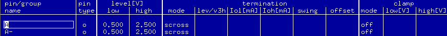
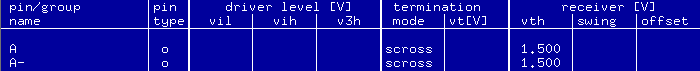
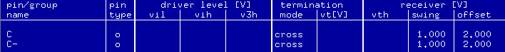

Using the cross termination
About this task
The cross termination can be used for a matched pair of single-ended pins or a differential pair of pins. The following is the character of the cross termination:
- when it is activated, the AB drivers are set to "High Z" state and the Cross Termination switch is closed.
- it provides a differential path for data rates of 1000 Mbit/s
- it supports only o pins (both std and fast mode).
- it terminates the receive path of a matched pair of single-ended pins or a differential pair of pins to 100 ohms with each other.
- the drive path of each single-ended channel is terminated with 50 ohms by the driver with a center tap type of termination.
This topic introduces how to set the cross termination for single-ended and differential o pins.
Before you begin
Make sure that the Level Setup window has been opened.
Procedure
Results
For a match pair of single-ended pins in std mode, in the Level Setup window, the termination mode column shows scross.

For a match pair of single-ended pins in fast mode, in the Level Setup window, the termination mode column shows scross and receiver [V] vth column shows the voltage single threshold.

For a differential pair of std pins or fast pins, in the Level Setup window, the termination mode column shows cross and the swing and offset columns show the setting of comparator voltages.

Functional changes
- Introduced before SmarTest 6.3.2